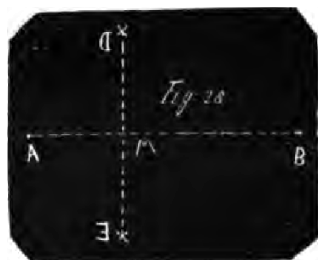

§§ 78–79: Dropping a Perpendicular & Orthogonal Reflection¶
78. Prob. Given the two endpoints of a straight line \(AB\) and a point \(D\) outside it, to find another point \(E\) (fig. 28) which determines the position of \(DE\) perpendicular to \(AB\), and the point \(M\) where it cuts it.


Sol. Make \(AD = AE\), and \(BD = BE\) (§ 11). Then \(E\) will be the first point sought. Bisect \(DE\) at \(M\) (§ 66). Then \(M\) will be the second.
Dem. This Solution remains demonstrated by § 14.
79. Prob. To find two points of a straight line which shall be perpendicular to the middle of \(DE\) (fig. 28).
Sol. Taking an arbitrary radius, make \(= DA = EA\) with it. Taking the same radius, or another arbitrary one, make \(= DB = EB\) on the other side. Then \(A\) and \(B\) will be the two points sought.
Dem. This Solution remains demonstrated by § 14.